Sol-Engine · Research blog
StreamRender-H3Code Drives the World, Video Models Generate the Visuals
A code game engine keeps the world state. A two-step streaming video model renders it as the player drives.
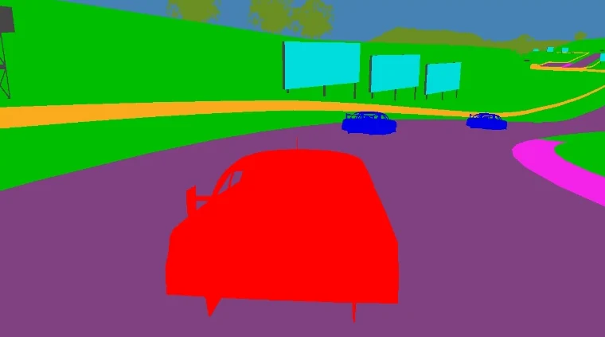
Engine · semantic map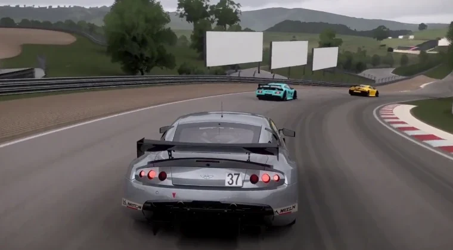
Look A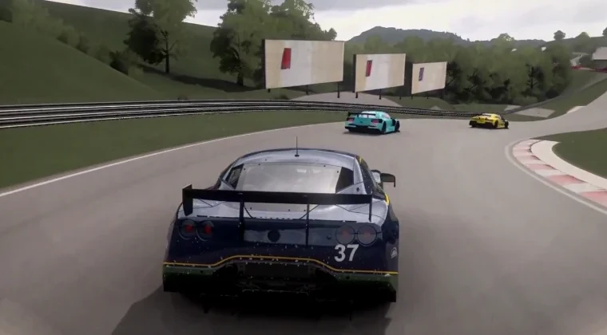
Look BWhy Separate World Logic from Visual Generation
An interactive world must determine how player actions change its state and how those changes appear on screen. World logic governs maps, physics, rules, and object states. Visual generation determines appearance, materials, lighting, and style. Game engines already separate these responsibilities, and video models offer a new way to produce the visuals.
World logic requires explicit, controllable state. Road positions should be queryable, collisions should follow executable rules, and revisiting a location should return the same map. Code directly represents and maintains this information, allowing developers to modify rules, debug behavior, and reproduce interactions. Video models can use reference conditions to give the same scene structure and motion different appearances.
StreamRender-H3 separates these responsibilities between a Code Game Engine and a Streaming Diffusion Render. The engine maintains world state and responds to player input, while the video model continuously generates the visuals. An intermediate state representation connects the two. This preserves control over the world while enabling flexible, high-fidelity visuals without relying on a traditional 3D pipeline for final rendering.
Overall Architecture: Code Game Engine × Streaming Diffusion Render
2.1Code Game Engine: Maps, Physics, and Interaction Feedback
The Code Game Engine maintains every part of the world that code can state exactly. Throughout this post we use a racing game as the running demo. It serves only as an example, and nothing in the design is specific to racing. In the racing demo, the engine is a browser game written in three.js. In general, the engine keeps three kinds of information.
Maps. A map describes the geometry and layout of the scene, the objects placed in it, and the class to which each object belongs. In the racing demo, the map holds the track with its edges and barriers and the scenery along the route. Because the map lives in code, any part of it can be queried at any time, and returning to a location shows exactly the same scene.
Physics and rules. Physics and rules determine how objects move and interact, such as how a body responds to the player's input, what happens in a collision, and how non-player characters behave. They advance with a fixed time step, so the same sequence of inputs always produces the same trajectory, which makes behavior easy to debug and replay. Scripted agents can also play the game on their own, which lets us record reproducible sessions without a human player. In the racing scenario, every car in the recorded training sessions is driven by an AI driver.
Interaction feedback. At every step, the engine reads the player's input, advances the world, and reports where every object is and where the camera points. It then draws the current state from the camera's viewpoint. This drawing does not need to look good. It only needs to convey the structure of the scene precisely, in the form described in Section 2.2, because producing the image that the player sees is the task of the video model.
2.2Intermediate State Representations: Connecting World State and Visual Generation
The engine and the video model need a common representation. This representation must carry everything that the world logic decides, such as where objects are, what shapes they have, how they move, and where the camera points. At the same time, it should carry nothing about how objects look, so that appearance is left entirely to the video model. Depth maps, edge maps, and low-fidelity renders of the game itself all satisfy these requirements to some degree.
We currently use semantic maps, in which every pixel is painted with a flat color that identifies the class of the object it shows, without lighting, texture, or shading. A semantic map contains the layout of the scene, the outline and position of every object, their motion, and the camera path, which are exactly the quantities that the world logic determines. Because it contains no appearance, the same play session can be rendered in different styles. A semantic map is also inexpensive to produce, since any engine that can draw its scene with one flat color per class can drive the renderer, and this keeps the interface open to other games and engines. In the racing demo, the semantic map distinguishes 13 classes, namely road, road edge, terrain, grass, vegetation, rock, barrier, building, grandstand, billboard, sky, the player's car, and rival cars. These classes and their colors are fixed and shared between training and deployment.
The video model is built on MiniMax-H3 Ref2VA, a model that generates video and audio from a prompt together with reference images and reference videos. The semantic stream enters it as a reference video. Each of its latent frames is aligned with the output latent frame at the same time step, so the semantic video determines the structure of every generated frame.
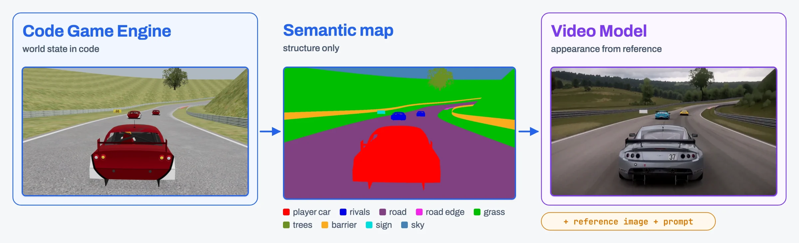
2.3A Real-Time Interaction Loop from Player Input to Video Feedback
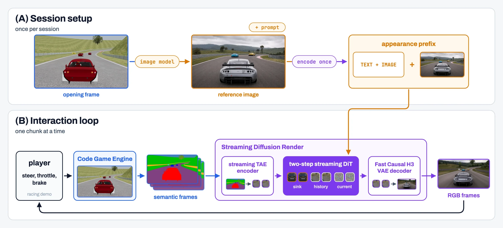
Interactive play differs from offline video generation in two ways. The video cannot be produced in advance, because its content depends on inputs that the player has not given yet. Each input must also appear on screen quickly enough for the player to react to it. StreamRender-H3 therefore runs as a loop in which the engine and the renderer work on the same stream at the same time, and the player sees the result while the next part is still being generated.
A session consists of two phases. Setup happens once at the beginning. The engine draws the opening frame of the scene, an image generation model turns this frame into a photorealistic reference image, and the reference image and the prompt are encoded once and kept for the entire session (Section 3.1.1). The interaction loop then runs without pause, and each pass through it consists of five steps.
- The player gives an input through the keyboard or a controller. In the racing demo, this input steers, accelerates, or brakes the player's car.
- The engine applies the input at its next physics step and advances the world.
- The engine draws one semantic frame for every video frame and streams these frames to the renderer.
- The renderer collects the semantic frames of one chunk, which covers a fraction of a second of video. It generates the chunk in a few denoising steps, two in the racing demo, conditioned on the appearance of the session and on its own recent output, and decodes the result into RGB frames.
- The frames are displayed, and the player reacts to them in the next pass of the loop.
The loop runs in real time when each chunk is ready before the previous one has finished playing. The video then keeps pace with play, and each input shows up as soon as the chunk that contains its effect has been generated. The engine and the renderer share only the semantic frame stream and the appearance conditions of the session, so either side can be replaced independently. A different game, for example, only needs to produce semantic frames in the same format. Sections 3.2 and 3.3 describe how decoding and generation fit within the playback time of each chunk.
Key Technologies
3.1Streaming Diffusion Render
The streaming diffusion render turns the semantic stream of the engine into photorealistic video. This section describes how it is conditioned and trained. Section 3.1.1 explains how a reference image and a prompt fix the look of the world. Section 3.1.2 explains how each chunk stays consistent with the stream before it and how the multi-step teacher is trained. Section 3.1.3 explains how the teacher is distilled into a two-step student for real-time play.
3.1.1Appearance Control Driven by Reference Images and Prompts
A semantic map tells the renderer where everything is, but not what it looks like. In the racing demo, for example, the same road class could become dry asphalt at noon or a wet street at night, and the same vehicle class could become any car in any color. The renderer therefore needs a second source of information that fixes the look of the world. This information must also stay the same for the whole session, so that objects keep their appearance as the stream goes on. A prompt alone is too coarse for this purpose, because a few sentences cannot pin down a particular material, color scheme, or lighting. We therefore give the renderer two inputs at the start of each session, a reference image that shows the intended look and a prompt that explains how the inputs relate to each other.
Reference image. An image generation model redraws the opening frame of the game as a photorealistic picture. The redrawn picture keeps the composition of the frame, including the camera view, the layout of the scene, and the position of every object, and it chooses the materials, the colors and markings of objects, the weather, the lighting, and the overall style. Since the picture is aligned with the first semantic frame, each object in it corresponds to a region of a known class, so the renderer can tell which appearance belongs to which class. Changing the instruction given to the image model is enough to produce a different look for the same opening frame.
Prompt. The prompt follows the structured template of MiniMax-H3. It defines the subjects of the scene and states which input controls each of their properties. The look of each subject comes from the reference image, whereas its outline, position, and motion, as well as the camera path, come from the semantic video. In the racing demo, the prompt defines three subjects, namely the player's car, the rival cars, and the track with its surroundings. The prompt also states which object class each color of the semantic video represents, and it describes the rendering style, the lighting, and the sound.
Replacing the reference image and the prompt changes the look of the same game, while the engine and the semantic stream remain unchanged.
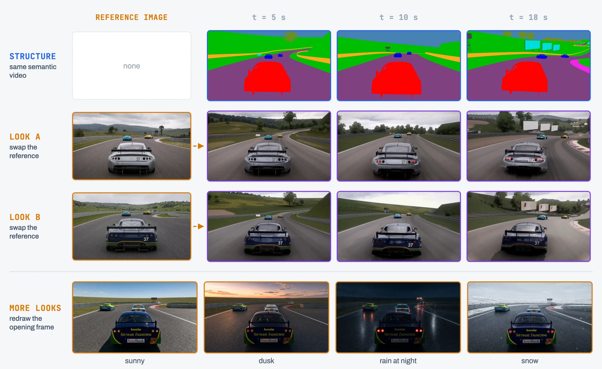
Training data in the racing scenario. For the racing demo, the renderer learns this division of labor from 10,000 paired clips of racing gameplay, each about 15 seconds long. The clips are cut from about 5,100 recorded races on 39 tracks, which include road circuits, dirt tracks, and ovals. Every car in these races is driven by an AI driver, each race has between zero and fifteen rival cars, and the camera follows the player's car from behind. For every clip, the engine records its normal render and the semantic video at 1344×768 and 24 frames per second. Each clip then receives three conditions and one target.
- Reference image. An image editing model (GPT-Image-2.5) redraws the first frame of the normal render as a screenshot of a modern photorealistic racing game. It keeps the camera, the road course, and every car at its position and size, and it redesigns everything else in rich detail without adding any object. The clips are assigned ten lighting looks in turn, so that each look covers 1,000 clips. The looks are clear midday sun, early morning sun, golden hour, sunset, blue hour, overcast sky, broken clouds, summer haze, morning mist, and storm clouds with a shaft of sunlight.
- Prompt. An LLM agent (Claude Opus 5.5) views the reference image and the semantic video and writes one prompt for each segment of the target in the template described above. Besides the subjects, the style, and the sound, each prompt narrates the events of its segment in time order with timestamps, such as when the player's car enters a bend or passes a rival.
- Target video. The native MiniMax-H3 Ref2VA model generates the photorealistic target from the reference image, the semantic video, and the prompt with 25 denoising steps. The native model generates about five seconds at a time, so each 15-second clip is produced as three consecutive segments, and each segment starts from the last frame of the previous one.
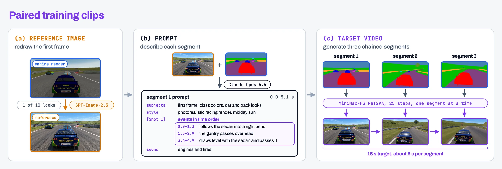
The teacher of Section 3.1.2 is trained on these targets. The student of Section 3.1.3 learns from critics rather than from targets, so it is trained on longer recordings that need no target. In the racing scenario, these are 5,000 drives of 60 seconds, each with its semantic video, a reference image, and a prompt.
3.1.2Historical Context and Temporal Consistency
The renderer generates the video chunk by chunk, and every chunk must remain consistent with what came before it. Following the streaming design of LynnReal-Omni, we denoise each chunk in a single window together with two kinds of context. The first is the sink, the opening part of the stream, which stays in every window for the whole session. It anchors the identity of the scene and its objects, in the same spirit as the attention sink of StreamingLLM and the frame sink of LongLive. The second is the recent history, the part generated immediately before the current chunk, which carries motion across chunk boundaries. Attention inside the window is bidirectional. Every window is mapped onto the same position template, so a window late in the stream appears to the model exactly like one at the beginning.
In the racing demo, the deployed model generates two scheduling units per chunk, each holding one or two latent frames, and it keeps two units of sink and two units of recent history. The first window of a stream generates seven units at once, which provides later windows with a full context from the start. The teacher uses a wider window with four units of sink and five units of recent history.
Prefix cache. The text and image conditioning, the reference image, and the sink no longer change after the first continuation. We therefore split each window into a fixed prefix and a moving part, and we let the prefix attend only to itself while the moving part attends to the entire window. At inference, the keys and values of the prefix are computed once for each denoising step and reused for every later chunk, so only the recent history and the current chunk are recomputed (Section 3.3). Training uses the same attention mask and recomputes the prefix with the current weights, which means that the model is trained on exactly the computation it performs at deployment.
Streaming training. The renderer is trained in three stages. A multi-step teacher is fine-tuned from MiniMax-H3 Ref2VA, first with teacher forcing and then with history resampling, and a two-step student is then distilled from it with DMD for real-time use (Section 3.1.3). In the racing demo, the teacher is trained on the paired racing clips of Section 3.1.1. All three stages are trained in the same way as the model runs, that is, along streams and window by window rather than on independent clips. Every training clip forms a stream of consecutive windows. Each training step processes one window of every stream, and the output of that window is written back as history for the next window, which a later step processes. The model therefore always sees its context in the same layout of sink, recent history, and current chunk as at inference. The three stages differ in what they write back. Teacher forcing writes back the ground truth, history resampling writes back resampled versions of the ground truth as described below, and the student writes back the chunks that it generates itself (Section 3.1.3).
Training the teacher on resampled history. After teacher forcing, the teacher has seen only ground-truth history. At inference, however, its context is its own imperfect output, and its errors then accumulate along the stream. We close this gap with the resampling operation of Resampling Forcing. Resampling Forcing trains a causal autoregressive video model end to end and uses self-resampling to expose it to its own errors on the history frames. Our renderer keeps bidirectional attention inside each window, so we borrow only the resampling itself and apply it to the history of each window. For each stream, a noise level is drawn from a shifted logit-normal distribution. At every window, the ground-truth chunk is noised to this level and resampled by the model itself without gradient, and it is this resampled chunk rather than the ground truth that is written back as history. The current chunk is trained against the ground truth while being conditioned on the resampled history, so the teacher learns to continue from context that contains its own errors.
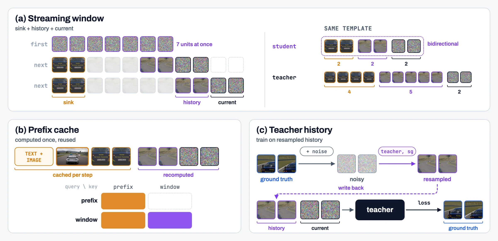
Guidance fitted into the teacher. The released MiniMax-H3 checkpoint is guidance-distilled, so it samples with a single forward pass per denoising step. Following the semantic video closely, however, requires guidance on the structure condition as well, and classifier-free guidance over the caption and the semantic video would take three forward passes per step. LynnReal-Omni avoids this cost by training guidance into the model. It combines the conditional prediction of the model with a stop-gradient caption-free prediction and fits the combination to the data, so that at convergence the conditional prediction alone equals the guided prediction. LynnReal-Omni fits a single guidance step on the caption. We extend this approach to structure control with a chain of three branches. The branch ∅ receives neither the caption nor the semantic video, the branch T adds the caption, and the branch TS adds the semantic video, while the reference image is present in every branch. Classifier-free guidance along this chain starts from the plain conditional predictions u(∅), u(T), and u(TS). It stretches the caption step from u(∅) to u(T) by 1.5 and the structure step from u(T) to u(TS) by 3.0, which is the setting of the racing demo. Guidance fitting runs this chain backwards. We treat the raw outputs f(∅), f(T), and f(TS) of the network as guided predictions and undo the guidance by shrinking each step by its scale, which gives u(∅) = f(∅), u(T) = f(∅) + [f(T) − f(∅)] / 1.5, and u(TS) = u(T) + [f(TS) − f(T)] / 3.0. The start of each step is held fixed with a stop gradient, so that u(T) = (2 f(T) + sg f(∅)) / 3 and u(TS) = (f(TS) + sg f(T) + sg f(∅)) / 3, and every u is trained against the data with the ordinary diffusion loss. Once each u matches the plain conditional prediction, applying the guidance to u returns f, so a single call of f(TS) gives the guided prediction. Placing the strongest guidance on the step that adds the semantic video keeps the layout, the objects, and the camera of the generated video consistent with the state of the engine. The teacher learns guidance fitting and history resampling in the same training run, so each of its denoising steps takes a single forward pass.
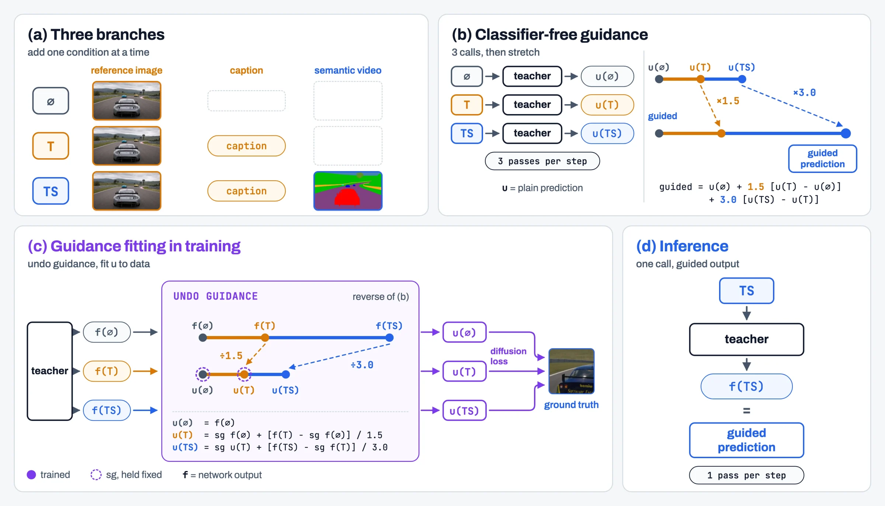
3.1.3Two-Step Distillation and Autoregressive Streaming Generation
Even with guidance fitted, the teacher is too slow for real-time play. In the racing demo, it samples each chunk with 16 denoising steps, whereas real-time play leaves only a fraction of a second to generate a chunk. We therefore start a student from the teacher and distill it so that it generates each chunk in two steps while continuing its own stream.
Student. In the racing demo, the student generates each chunk in two denoising steps, first from pure noise to an intermediate noise level and then to a clean chunk, and it continues from its own output chunk after chunk with the window and prefix cache of Section 3.1.2. Its window of two sink units, two history units, and two current units is smaller than that of the teacher, which keeps each step inexpensive. The student is distilled with the same streaming training as the teacher, but without any ground truth. In the racing demo, each of its training streams covers the first 30 seconds of a 60-second drive (Section 3.1.1).
Streaming distribution matching distillation. We distill the student with distribution matching distillation (DMD, DMD2). A frozen real critic represents the distribution that the student should reach, and a trainable fake critic tracks what the student currently generates. The difference between their scores on a re-noised student chunk tells the student how to move toward the real critic. As in Self Forcing, the student is trained on its own rollout rather than on ground truth. Following the streaming training of Section 3.1.2, each step generates the current window of every stream from the student's own earlier output, computes the loss on that chunk only, and writes the generated chunk back, so that the next step continues the same stream. The history of later windows has therefore been generated by earlier versions of the student, and no gradient flows into it. This follows the same idea as the streaming long tuning of LongLive, which extends the clip from the previous iteration and applies DMD only to the newly generated segment. Our streams, however, advance by one chunk per step rather than by several seconds.
Critics on a short span. Both critics are the native bidirectional MiniMax-H3 Ref2VA, and each scores a short continuous span of the student's rollout that ends at the current chunk. The frame of the rollout at the start of the span serves as the reference image, and the semantic video of the same span serves as the reference video. In the racing demo, a span holds up to 29 latent frames, about four seconds. Before distillation, the native model is fine-tuned with LoRA on the opening five seconds of the paired racing clips of Section 3.1.1, using the guidance fitting of Section 3.1.2 with scales 3.0 and 4.0. The real critic is a frozen copy of this model, so a single forward pass gives its guided prediction. The fake critic continues to train the same LoRA on the student's spans with the same guidance fitting, and it scores with its plain conditional prediction u(TS). DMD therefore moves the student toward the guided distribution of the real critic. The fake critic learns on the whole span, whereas the student is updated through its current chunk only.
Prompts cut from a timeline. Each critic sees a different few seconds of a long drive, so its prompt must describe exactly that span. A prompt that describes the drive only in general terms is not enough. In the racing demo, when the fine-tuned native model received such general prompts, it rendered the semantic video in reverse in six of eight test windows, and it also got the colors of the cars wrong. Removing parts of the prompt one at a time showed that the events narrated in time order fix the direction of time, and that the description of each car fixes its colors. We therefore label every 60-second drive once with a timeline. In the racing demo, an agent running GPT-6.1 Sol watches the semantic video together with two tables sampled every quarter second, the speed, acceleration, and yaw rate of the player's car recorded by the engine, and the position and size of every car in the semantic video. It writes the appearance of every car and of the track, which holds for the whole drive, events of 0.3 to 2.5 seconds with absolute timestamps, and the state of the scene every half second. For each score span, the events that fall inside it are cut out and shifted to the clock of the span, and they are assembled with the appearance into a prompt in the template of Section 3.1.1. The student keeps its single prompt for the whole session, so the prefix cache of Section 3.1.2 still applies.
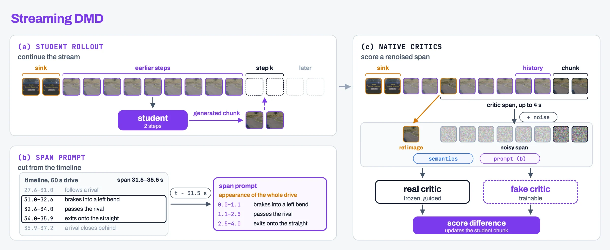
3.2Fast Causal H3 VAE: Decoding the Stream as It Arrives
The streaming render produces latents, and a decoder turns them into the frames the player sees. In an interactive loop, each new latent frame must become pixels immediately, using only what has already been generated. The released H3 VAE decoder gives the best image quality, but it was built for offline video. It is a 36-layer Transformer with 2.42B parameters that relies on two kinds of overlap. Spatial tiling splits each frame into 256-pixel tiles that overlap by at least 64 pixels and blends the seams, so at 720p it decodes 28 tiles and computes every pixel about twice. Temporal chunking with overlap decodes five latent frames (17 video frames) at a time together with the next two latent frames, so it waits for latent frames that do not exist yet and computes each latent frame 1.4 times. It needs about 870 ms per five-latent-frame block at 720p. A tiny streaming decoder such as TAE runs in about 10 ms, but in our streaming runs it reached only 27 dB PSNR against the full VAE, kept 80% of its fine detail, and made grass, foliage, and road texture flicker from frame to frame.
Fast Causal H3 VAE keeps the released decoder's weights and changes how the decoder is used, in four steps.
Pruning to 24 layers. We removed layers greedily without retraining, each time dropping the layer whose removal lowered reconstruction PSNR the least, and timed the decoder at each depth. Under a budget of 50 ms per two latent frames at 720p and 540p, 24 layers fit. We keep layers 0–17, 19–21, 31, 32, and 35 with their original weights, which brings the decoder to 1.62B parameters.
Chunk-causal attention in time. The DiT emits two or three latent frames per round, so the decoder works on chunks of two latent frames. Each chunk attends to its own two latent frames and to the cached keys and values of the previous four in every layer, about 0.7 s of video, and never to a later latent frame. Every call returns eight video frames. When a chunk contains the first latent frame of a native five-latent-frame block, that latent frame yields one video frame, exactly as in the released VAE, so the stream still produces 17 video frames per five latent frames. This replaces temporal chunking with overlap: the context comes from cached past latent frames instead of recomputed future ones, so each latent frame is computed once.
Windowed attention instead of spatial tiling. We remove spatial tiling. Attention runs within non-overlapping windows of 16×16 tokens, which cover the same 256 pixels as a tile, and every other layer shifts the windows by half a window so that neighboring windows exchange information inside the network. Every pixel is computed once and no seam blending is needed. Spatial positions are encoded relative to the window, as in the released tile decode.
Relative time for the register tokens. The decoder carries four register tokens and one class token that attend to the whole frame. We rebuild them for every chunk and never cache them, so they cannot carry information backward from a later chunk. Our first version left these tokens without a time position, while frame tokens used the absolute latent-frame index. Their attention then depended on absolute time, and because training clips held ten latents, the first video frame of every five-latent-frame block turned about 20 gray levels darker from the eleventh latent frame on. Giving the register tokens the time position of their chunk makes every attention score depend only on time differences. The same latent frames now decode identically whether the stream clock starts at 0, 100, or 1000.
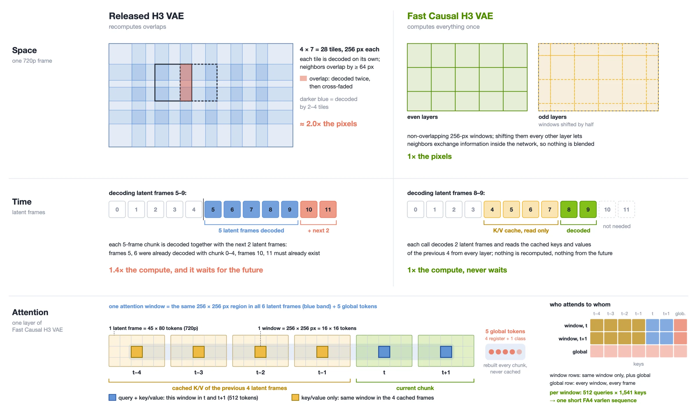
Distillation. The teacher is the full H3 VAE decode of the same latents. The student decodes chunk by chunk with the same code used in deployment, on clips of three five-latent-frame blocks (51 video frames, 384×384 crops), so it sees block starts both with an empty cache and with a full one. The loss combines L1, LPIPS (weight 1.0), a frame-difference term (weight 1.0, tripled across latent boundaries), and an edge term (weight 0.1). We trained for 6,000 steps on eight GPUs with AdamW at a learning rate of 2×10⁻⁵, decaying it on a cosine schedule to 10⁻⁶ over the last 3,500 steps. In the last 500 steps PSNR on the evaluation cases rose by only 0.06 dB. As a check on causality, changing any future latent frame leaves every earlier output frame bit-for-bit unchanged.
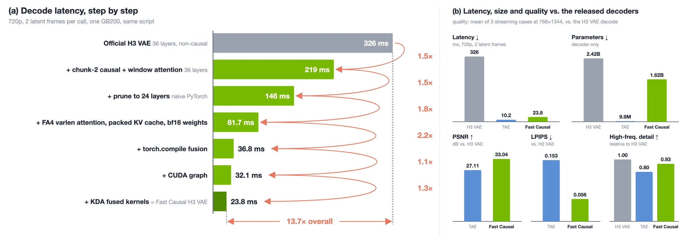
From 146 ms to 24 ms. The same model, run naively in PyTorch, takes 146 ms per two latent frames at 720p. Profiling showed that matrix multiplications took only about 15 ms of this. The rest went to copying the cache and re-partitioning windows (36 ms), masked attention on a slow kernel (30 ms), and many small element-wise kernels (30 ms), including a cast of all weights from fp32 to bf16 on every call. We removed these costs in six steps, none of which changes the computation:
- Linear-layer weights are stored in bf16 once, instead of being cast on every call. The residual stream stays in fp32, as in training.
- The key-value cache is kept per window in a preallocated ring buffer. Each new latent frame receives its rotary position once and is written into its slot in place, so the cache is never concatenated or re-partitioned.
- Partitioning tokens into windows and merging them back become single index gathers, fused by
torch.compilewith normalization and rotary embedding. - Window attention runs through FlashAttention-4's variable-length interface. Each window is one short sequence, about 512 queries against 1,541 keys, padding positions are left out of the packed arrays, and
seqused_khides cache slots that are still empty at stream start, so no mask is needed. FlexAttention with a block mask took 6 ms per layer on this shape, more than the whole budget across 24 layers. - Every chunk has the same shapes, so the whole chunk is captured once as a CUDA graph and replayed, which removes kernel-launch overhead (37 ms → 32 ms).
- We then handed the 32 ms version to Kernel Design Agents (KDA), run with Claude Code and Opus 5.5 on one GB200 node for 2.5 hours, with a correctness gate against the reference and a latency benchmark as its task contract. The agent appended the five global tokens to the token rows so that every linear layer runs once; fused qk-norm, RoPE and the K/V cache write into one Triton kernel after the qkv GEMM; rewrote the global-token attention as a split-K Triton kernel; fused the residual add with the next RMSNorm and the SwiGLU into the up-projection GEMM (quack); computed the fp32 output head as one bf16 tensor-core GEMM over a hi/lo split; and moved the stream state onto the GPU so that a single CUDA graph serves every chunk (32 ms → 24 ms). Matrix multiplications now take about 14 of the remaining 24 ms.
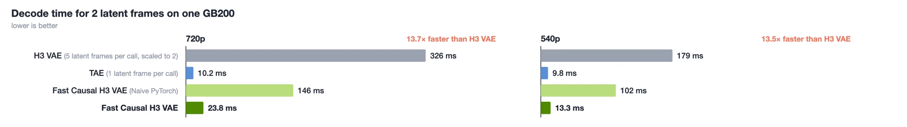
Both optimized versions match the naive PyTorch implementation to 64–71 dB PSNR, the difference coming from bf16 rounding.
In the streaming loop. The decoder replaces only the video decoder of the pipeline; the TAE encoder for reference frames and the two-step DiT are unchanged. Its interface takes one latent frame at a time: the first latent frame of a pair is buffered, and when the second arrives the pair is decoded at once. At 768×1344 on the eight-GPU loop, the 32 ms version (before the KDA step) decodes 2 latent frames in 36.8–37.3 ms, against 264–329 ms for the DiT in the same round, and no block-start video frame differs from the VAE by more than two gray levels.
3.3Inference Acceleration and End-to-End Deployment
Real-time interaction requires every streaming step to return rendered frames within a tight latency budget. Starting from a PyTorch native baseline, we apply a series of complementary optimizations to the diffusion render, each removing a different source of redundant computation or data movement. The figure below shows their cumulative effect. The diffusion render time drops from 799.66 ms to 217.96 ms, a 3.67× speedup. Over the same steps, the latency of the overall render pipeline (from reference video encoding, through the DiT forward passes, to decoding) falls from 852.47 ms to 272.73 ms.
Multi-GPU parallel inference. To reach the lowest possible latency, we serve the model on eight GPUs. Each GPU keeps a full, resident copy of the model weights, so no weights are gathered or exchanged during inference. We split the work with Ulysses-style context parallelism. The token sequence of each streaming step is divided across the eight GPUs, and each GPU runs the feed-forward layers on its local shard. For attention, an all-to-all exchange regroups the data by head. Each GPU then attends over the full sequence for its subset of heads before the results return to the sequence layout.
Static-context KV caching. The context at each step falls into two parts. The static context holds the text–image conditioning features, the reference image, and the sink tokens. It stays fixed for the whole session. The dynamic context holds the current and most recent frames, and it changes as the stream moves forward. We compute the key/value states of the static context once and reuse them for every later chunk. Each denoising timestep keeps its own cache, so every step attends to context that matches it exactly. Each request reads directly from its own cache bank, which avoids any general-purpose merging along the way. Only the dynamic context is recomputed at each step. This greatly reduces the number of tokens processed by both the attention and feed-forward layers. This single change cuts the diffusion render time from 799.66 ms to 315.42 ms.
AdaLN projection caching. Each DiT block is conditioned through adaptive layer normalization (AdaLN). It projects the conditioning signal into the shift, scale, and gate parameters that modulate the block's activations. In streaming generation, the session conditioning is fixed and the denoising schedule repeats for every chunk. So the same inputs keep producing the same projections, layer after layer and chunk after chunk. We cache these projections and reuse them whenever the conditioning input is identical. Only the projection results are cached; the hidden activations, which change with every token, are left alone. This takes a repeated per-layer computation off the critical path and brings the diffusion render time further down to 307.28 ms.
Attention optimization. Splitting the model this finely across eight GPUs changes where the time goes. The feed-forward layers run locally on each shard and scale well. Attention, by contrast, combines the heaviest computation with cross-GPU communication and the most complex data movement. Under this parallel setup, attention becomes the largest remaining target for optimization, and we optimize it at three levels:
- Shape-aware kernel tuning. We run attention with a Blackwell-optimized FlashAttention-4 kernel and tune it for the exact query and key/value shapes that occur in streaming inference. Because each GPU handles a relatively small workload, we set the key/value split count to 1, avoiding the overhead of splitting. This reduces the diffusion render time from 307.28 ms to 251.81 ms.
- Attention metadata reuse. Besides queries, keys, and values, every attention call needs structural metadata: sequence lengths, cumulative offsets, and maximum lengths. Within one forward pass, layers that share the same sequence structure now prepare this metadata once and reuse it. This removes repeated per-layer setup and the host–device synchronization it caused, and lowers the diffusion render time to 224.10 ms.
- Persistent KV layout. Cached keys and values live in persistent per-layer buffers, stored directly in the layout the attention kernel reads. The static context is written once. Each step then updates only the dynamic region in place, which removes repeated memory allocation and history repacking. This brings the diffusion render time to its final 217.96 ms.
Together, these optimizations deliver real-time rendering across multiple GPUs, making interactive, real-time streaming video possible for users.
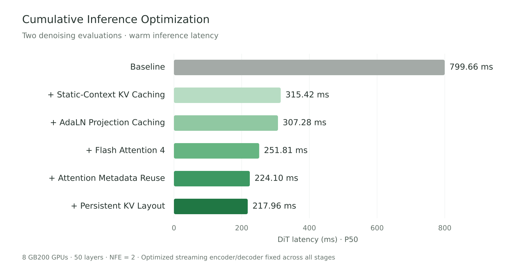
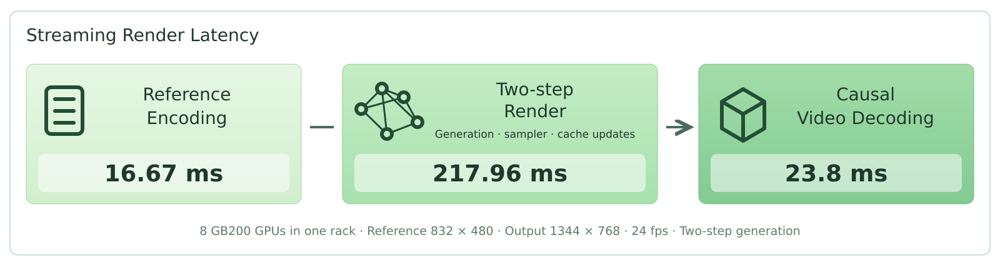